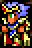
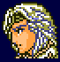
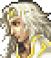

Paladin
Appearances: FF4, FF9, FF11, FF12RW, FFTA, FFTA2
Aliases: Defender
Paladins are much like Knights, except for one key difference - they have white magic. Though their power in this tends to be low, it works well for certain tight situations. Some jobs also have the "Cover" ability, which makes the paladin jump in front of a character (sometimes with low HP, sometimes not) and take physical damage for them. They wear white clothing and can cast low-level white magic.
Similar Job Classes: Knight
Expand All Images | Collapse All Images
| FF4 |
|    |
| NAME: Cecil Harvey |
| OVERVIEW: Cecil starts out as a Dark Knight. |
| WEAPONS: Uses swords best |
| ABILITIES/SKILLS:
Cover - Protect a weak character from damage by taking it for them
Off - Discontinue covering for allies after "Cover" has been activated
White - Cast White Magic
|
| ATTRIBUTES: High strength, high defense, high black magic power |
|
| FF9 |
 |
| NAME: Beatrix |
| OVERVIEW: Beatrix is only temporarily in the game for parts of the storyline. Seiken means "Holy Sword" in Japanese. |
| WEAPONS: Sword (Save the Queen) |
ABILITIES/SKILLS:
White Magic - Cast White Magic
Seiken:
Thunder Slash - Lightning attack equal to 19% of current HP
Stock Break - Damage all enemies 50% stronger than normal attack
Climhazzard - Non-elemental magic damage twice as strong as normal attack
Shock - Massive physical damage three times as strong as normal attack
| SUPPORT ABILITIES (character specific): Unknown
| | ATTRIBUTES: High strength, high magic power, low speed, low magic defense
| |
|
| FF11 |
  |
| NAME: Paladin |
| ATTRIBUTES: High defense, high HP, low magic, low attack power |
| WEAPONS: Uses swords and staffs best |
| ABILITIES/MAGIC:
Invincible - Immunity to all physical attacks
Holy Circle - Resistance against undead to party members
Shield Bash - Attack with chance of stunning enemy (shield required)
Sentinel - Increase defense
Cover - Protect party members by standing inbetween
Rampart - Increase defense of nearby party members
White Magic - Cast White Magic
|
| SUPPORTED ABILITIES: Undead Killer, Defense Bonus, Resist Sleep, Shield Mastery, Auto Refresh |
| OVERVIEW: Can wear the heaviest armor in the game |
|
| FF12RW |
 |
| NAME: Basch |
| OVERVIEW: Basch protects his allies and deals damage to his foes. |
| WEAPONS: Knight Swords |
| ABILITIES/MAGIC:
Protectga (Raise physical defense)
Shellga (Raise magical defense)
Flash of Steel (Deal damage in a straight line)
Inner Peace (Heal status ailments and add Regen)
Iron Will (Lower Strength and increase Stamina)
Cover (Take damage for allies)
Shining Ray (Deal damage in a large area)
|
|
| FF: Tactics Advance |
  |
| NAME: Paladin |
| OVERVIEW: Effective against undead monsters |
| WEAPONS: Knightswords, greatswords |
ABILITIES/MAGIC:
Chivalry:
Nurse - Heal HP and remove status ailments for self and surrounding party
Defense - Increase defense and magic defense for one turn
Cover - Take damage for nearby unit for one turn
Subdue - Deal very little damage
Drop Weapon - Attempt to de-equip enemy weapon
Parley - Convince enemy unit to leave battle
Saint Cross - Holy-damage on all adjacent units
Holy Blade - Massive Holy damage
Reaction Abilities: Reflex - Avoid regular attacks
Support Abilities: Weapon Def+
Combo: Knight Combo
|
| ATTRIBUTES: |
|
| FF: Tactics Advance |
  |
| NAME: Defender |
| OVERVIEW: Combines White Magic with heavy offense |
| WEAPONS: Knightsword, Broadsword |
ABILITIES/MAGIC:
Defend:
Tremor - Damage and knock back adjacent units
Meltdown - Sacrifice self to cause fire damage on all sides equal to user's current HP
Defense - Increase defense and magic defense for one turn
Drop Weapon - Attempt to de-equip enemy weapon
Hibernate - Remove status ailments on self
Mow Down - Heavy damage to all sides, reduce user's speed
Aura - Cast Regen and Auto-Life on self
Expert Guard - Lose evasion to prevent HP and MP damage for a turn
Reaction Abilities: Last Berserk - Cast Berserk on self when HP critical
Support Abilities: Weapon DEF+
Combo: Defend Combo |
|
| ATTRIBUTES: High HP, high defense, low MP, low magic power |
| FF: Tactics A2 |
   |
| NAME: Paladin |
| OVERVIEW: Almost identical to the FFTA Paladin. |
| WEAPONS: Knightsword, Greatsword |
ABILITIES/MAGIC:
Chivalry:
Nurse - Heal HP and remove status ailments for self and surrounding party
Defend - Increase defense and magic defense for one turn
Cover - Take damage for nearby unit for one turn
Sanctify - Damage/destroy undead
War Cry - Raise resilience of surrounding units
Parley - Convince enemy unit to leave battle
Saint Cross - Holy-damage on all adjacent units
Holy Blade - Massive Holy damage
Reaction Abilities: Reflex - Avoid regular attacks
Support Abilities: Defense Up
|
|
| FF: Tactics A2 |
   |
| NAME: Defender |
| OVERVIEW: Almost identical to the FFTA Defender. |
| WEAPONS: Knightsword, Broadsword |
ABILITIES/MAGIC:
Warding:
Whirl Burst - Damage and knock back adjacent units
Meltdown - Sacrifice self to cause fire damage on all sides equal to user's current HP
Defend - Increase defense and magic defense for one turn
Rend Weapon - Attempt to destroy enemy weapon
Hibernate - Remove status ailments on self
Mow Down - Heavy damage to all sides, reduce user's evasion
Aura - Cast Regen and Auto-Life on self
Bulwark - Prevent HP and MP damage for a turn
Reaction Abilities: Critical:Berserk - Cast Berserk on self when HP critical
Support Abilities: Defense Up, Tank (Equip heavy armor) |
|
Traits of Paladin in Other Games
| FF3: The M. Knight can use White Magic, but only from the menu, not within battle. |
| FF5: The Mystic Knight resembles a paladin, but has only Black Magic. |
| FF6: The True Knight relic makes the wearer take damage for all allies in near-death status. |
| FF7: The Cover materia automatically Covers for allies. |
| FF8: The GF Brothers teach the Cover ability. |
| FF9: One of the supported abilities is "Cover". |
| FF10: The ability "Guard" will cause the character to take physical damage for an ally when in defensive stance. The ability "Sentinel" will take physical damage for an ally and reduce it by 50%. It is typically learned by Auron first. |
| Tactics: The Holy Knight class is similar to Paladin, but all its attacks are Holy-elemental, similar to a Magic Knight. |
Final Fantasy, all games and animation bearing the Final Fantasy name, and all characters in said games or animation are copyright their respective creators, including but not limited to Squaresoft, Square Enix, Square EA, Tokyo TV, and ADV Films.
 Characters
Characters Places
Places Stories
Stories Species
Species Organizations
Organizations Glossary
Glossary Transportation
Transportation Monsters
Monsters Jobs
Jobs Summons
Summons Items
Items Magic/Skills
Magic/Skills Weapon Types
Weapon Types In-Crossovers
In-Crossovers Ex-Crossovers
Ex-Crossovers Release Dates
Release Dates Name Origins
Name Origins Famous Moments
Famous Moments Music Database
Music Database Features
Features Game Help
Game Help Game Evolution
Game Evolution Square Art
Square Art Fan Flash
Fan Flash Final Fantasy Forums
Final Fantasy Forums Updates
Updates Site Info
Site Info Feedback
Feedback Full Index
Full Index Links
Links Staff
Staff